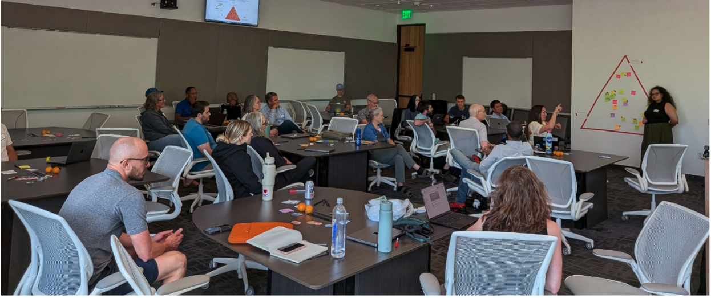
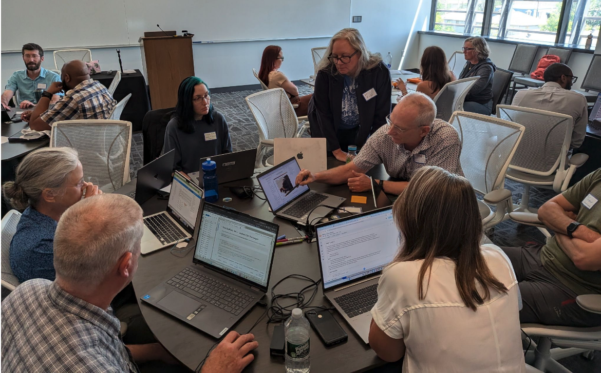

Finding Solutions Faster by Hacking on Ideas with Openscapes at ESIP
Ileana Fenwick ![]()
Amy Steiker
Mikala Beig
Ian Carroll
Rupesh Shrestha
Daniel Kaufman
Luis Lopez Espinosa
Diane Fritz
Aimee Neeley
Eli Holmes
Julie Lowndes
Ronny Hernández Mora
Stefanie Butland
Justin Rice
Kate Rose
Roland Schweitzer
Jimi Sanchez
Mathew Biddle
Tim Goff
Katherine Pitts
Rich Signell
In July 2026, we participated in the ESIP (Earth Systems Information Partners) Summer Meeting in Austin, Texas convening virtual and in-person participants under the theme of Bridging Divides: Data, Technology, Community. ESIP meetings are a unique and well-coordinated combination of community, conversation, and creativity that transforms the usual conference experience into an interactive and engaging meet-up for dreamers and doers alike. This year, the NASA Openscapes and earthaccess communities hosted a hackday to gather anyone interested in “making things easier for scientists” from policy, social, and technical perspectives. “Hackday” to us means collaboratively problem-solving and strategizing, and translating ideas into action. This includes decisions, code, and documentation. earthaccess was one of the winners of ESIP’s FUNding Friday at the July 2025 ESIP Meeting, supporting a hackday in December, and we were grateful the ESIP staff provided us a room to host one again. Here is some of what we all learned along the way!
Authors and Affiliations: Ileana Fenwick, Openscapes; Amy Steiker, NSIDC DAAC; Mikala Beig, NSIDC DAAC; Ian Carroll, OB.DAAC; Rupesh Shrestha, ORNL DAAC; Daniel Kaufman, ASDC; Luis Lopez Espinosa, NSIDC; Diane Fritz, NSIDC DAAC; Aimee Neeley, NASA (ICESat-2 Mission Applications lead); Eli Holmes, NOAA Fisheries; Julie Lowndes, Openscapes; Ronny Hernández Mora, Openscapes; Stefanie Butland, Openscapes; Justin Rice, NASA; Kate Rose, NOAA NCEI; Roland Schweitzer, NOAA/PMEL; Jimi Sanchez, NASA ESDIS; Mathew Biddle, NOAA IOOS; Tim Goff, EED3 EDC platform/RTX; Katherine Pitts, STC for NOAA/NESDIS/GEO Program Science; Rich Signell, Open Science Computing
Quicklinks:
- Sched - ESIP July Meeting
- Agenda Doc with topic pitches beforehand and live notes during the hackday
- People, structure, mechanics: How we led the earthaccess December 15 Hackday
- ESIP July Meeting Highlights Webinar (slides, recording) on August 26, 2026
- Powerful Questions card deck by Tara Robertson
- Outputs from the Hackday:
Cross-posted at openscapes.org/blog, https://nasa-openscapes.github.io/news
Arriving in the action
As conference attendees arrived in preparation for the upcoming meeting, our Hackday room in the conference center quickly filled, and with participants came an air of excitement. While setting up to begin, we could hear snippets of conversations, meetings, and reunions. Questions of “how far did you come from?” and introductions followed by “wow, it’s so awesome to see you in person!” swirled around the room as we all began to gather for our time “hacking” together. Hacking can mean many things, and more often than not it is associated with hands-on coding and troubleshooting, however, here we were hacking on decisions. Specifically, we challenged everyone to consider the friction in their work and the barriers to the implementation, usability, or social infrastructure for success that exist for their projects. We shared frustrations, heard successes, enjoyed the ease of asking questions while all in the same room, and ultimately came out with stronger projects and ideas on the other side.
The Hackday : what we did
Before joining us at ESIP we asked attendees to answer “What problem do you think needs solving?” in a shared ideas document. We used this as a guide to design collaborative breakout groups during the session. Attendees could also arrive and pitch new ideas!
A timeline of the Hackday:
1:30-2:30 pm CDT - Welcome; pitches
2:30-4:00 pm CDT - Breakout groups
4:00-4:10 pm CDT - Midway Check-in
4:10-5:30 pm CDT - Breakout groups
5:15 pm CDT - Stop Hacking; summarize where you’ve gotten to and communicate
5:30 pm CDT - Final Shareouts
6:00 pm CDT - Close out, transition to social time!
6:30-9pm CDT - Openscapes Happy Hour
Openscapes hosted this Hackday the day before formal programming for the conference began. Logistically, most ESIP attendees arrive on Day 0 as conference activities begin at 8 AM on Day 1. Those in attendance chose earlier flights and made arrangements to join us the afternoon before, which we intentionally planned so folks would not have to add extra travel to come! The space was generously provided by ESIP and coordinated by the Openscapes community.
35 participants joined us, from across different agencies and organizations (NASA, NOAA, Open Geospatial Consortium, Federal Geographic Data Committee, Open Science Computing).

What we learned together
Over the course of the five hours we spent together, we used a combination of community building tools (group icebreaker, silent journaling, agenda in a shared Google doc for collaborative note taking) and active conversation (in breakouts and reporting out to the group) to encourage connection, ideation, and documentation, for folks to hack on. We had four breakout groups with the following topics:
earthaccess onboarding | Goal: Development of clear and practical use cases with a focus on new user onboarding and documentation of user challenges (Lead: Amy Steiker, NSIDC DAAC)
earthaccess is a community-driven Python library that enables access to NASA’s Earth science data with just a few lines of code. (https://earthaccess.readthedocs.io)
STAC (SpatioTemporal Asset Catalogs) | Goal: To support a broader vision of interoperable metadata cataloguing and to explore earthaccess as a pathway for success (Lead: Danny Kaufman, ASDC and Ian Carroll, OB.DAAC)
STAC specification is a common language for describing and cataloguing files of geospatial information about the earth captured in a certain space and time. (https://stacspec.org/)
Point-collocation | Goal: To test and develop pre-existing examples of new user workflows and identify challenges to usability. (Lead: Eli Holmes, NOAA Fisheries)
point-collocation is a Python library built as an earthaccess plug-in that can combine data from field stations, animal tracks, survey points, or other lat/lon/time observations and the corresponding satellite or model values from NASA Earthdata (https://fish-pace.github.io/point-collocation).
earthaccess virtual datasets | Goal: Identifying ergonomic and performance opportunities with earthaccess virtual access patterns. (Lead: Luis Lopez)
Virtual data stores is an approach that enables data that is not cloud-optimized to masquerade as cloud-optimized, something required in order to stream data instead of downloading (NASA blog, virtualzarr.cloud)
Earth data in the age of AI agents + how they are changing the game | Transitioned to a social hour discussion
Across all breakout groups there were three themes that emerged time and time again: interoperability, quality control, and user experience challenges. Below we share some of the actions, conversations, and powerful questions that emerged from our time together.
Interoperability + Quality Control
Within the STAC group, participants identified earthaccess as a good place to start hacking on improved interoperability in data cataloging. Challenges the group identified included: richness of CMR (NASA’s common metadata repository), data getting lost, limitations around storing search results for future use, and the necessity to reduce CMR hits in order to increase efficiency.
During the Hackday they asked the following: What is a small step we can take?
As a group they determined their step to be drafting a new section/page for the Earthdata Cloud Cookbook, under Core Concepts to cover Metadata Catalogs. Their time together resulted in drafted language, suggested content, and references to include, outlined in a GitHub Issue.
User Experience Challenges
Within the virtual datasets group, they role-played a new user’s experience virtualizing NASA data to test for challenges and stopping points. To do so, they tested the virtualization of data from the Oak Ridge National Laboratory Distributed Active Archive Center (ORNL DAAC) where terrestrial biogeochemistry, ecology, and environmental information is stored.
Very quickly the group’s task was complicated and stalled. So they took a step back and asked: What assumptions are we making about our users?
In doing so they determined that a key user assumption was “breaking” the workflow in a place they wanted to be more flexible. Another success was watching this group hit a snag that another researcher in the room, Tom Nicholas (Earthmover), was able to troubleshoot and advise on! They were given direct and actionable feedback that resulted in success that would have been stalled significantly without the improvisation of breakout group collaboration during the Hackday. As a result, by the end of the Hackday their group had determined the steps of a successful, local workflow. They concluded with identifying scalability as a primary challenge to address moving forward.

Closing
One of the most impactful outcomes of the Hackday was the opportunity to ask powerful questions in community where being in the same space allowed spontaneity for novel conversation. When participating in a Hackday, the reality of solving a big question in a few hours is more often than not impractical. We are approaching big, bold revisions to how we work and approach scientific innovation, research, and progress that require collective and long-term effort.
What does this mean for your organization or individual work? It means incremental, intentional steps towards open science can look like asking questions that we are years away from answering and speaking honestly about how we are trying now. In doing so, we have seen in real time how disparate ideas become pathways to successful collaboration, how troubleshooting across a different ecosystem of problems informs a new approach, and how collective conversation instigates the exploration and expansion of technical approaches. As organizations large and small grapple with the realities of the rapidly shifting landscape of data science and scientific research, significant technological shifts and innovations will require social hacking. This model of hacking on decisions has proven useful at any stage and is a framework we emphasize as a tool to bring anyone a step closer to their big, bold ideas.
Citation
@online{fenwick2026,
author = {Fenwick, Ileana and Steiker, Amy and , Mikala Beig and
Carroll, Ian and Shrestha, Rupesh and , Daniel Kaufman and Lopez
Espinosa, Luis and Fritz, Diane and , Aimee Neeley and Holmes, Eli
and Lowndes, Julie and Mora, Ronny Hernández and Butland, Stefanie
and Rice, Justin and Rose, Kate and Schweitzer, Roland and Sanchez,
Jimi and Biddle, Mathew and Goff, Tim and Pitts, Katherine and
Signell, Rich},
title = {Finding {Solutions} {Faster} by {Hacking} on {Ideas} with
{Openscapes} at {ESIP}},
date = {2026-09-02},
url = {https://openscapes.org/blog/2026-09-02-esip-hacking-on-ideas/},
langid = {en}
}